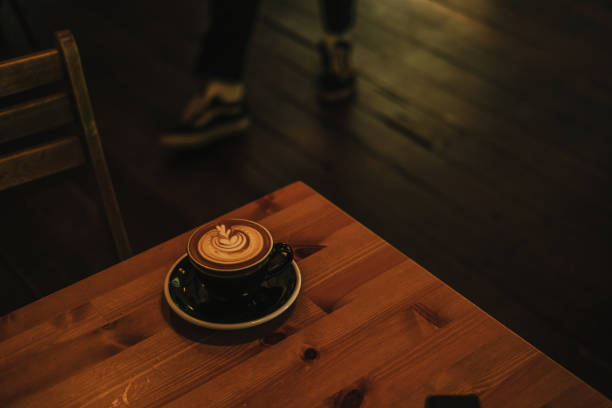
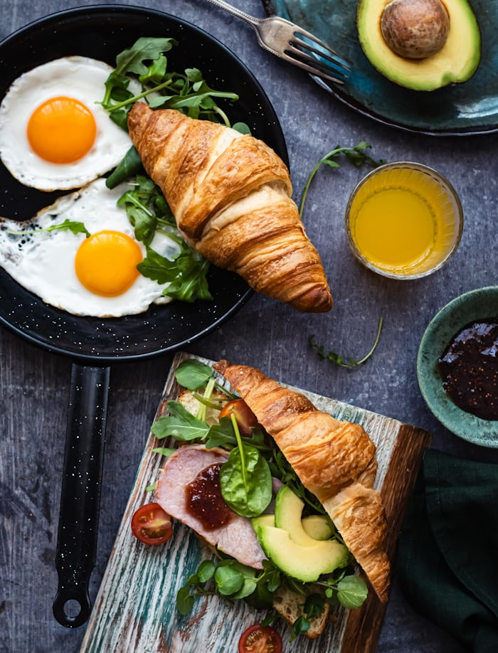
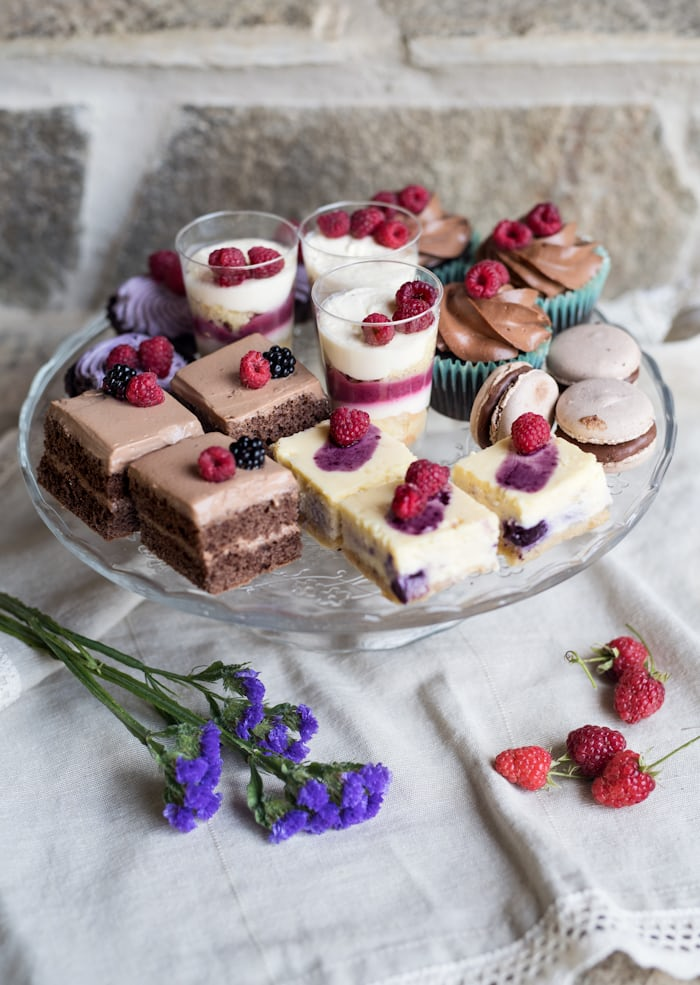
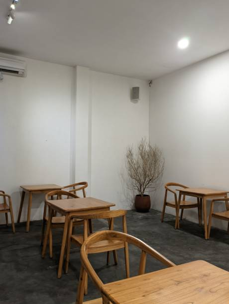
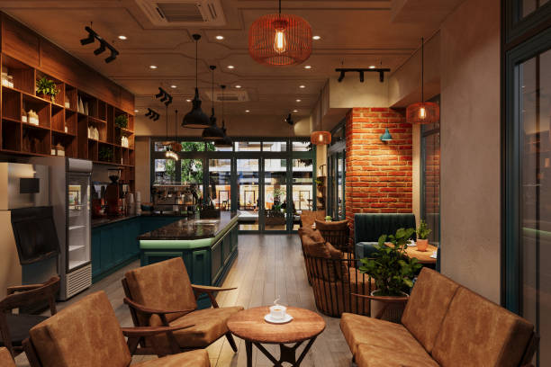

Café Luna – Tempat ngopi nyaman, aesthetic, dan memorable

Rp 30.000

Rp 25.000

Rp 40.000


“Tempatnya cozy banget, coffee-nya enak, dan staff ramah!”
“Sangat recommended untuk kerja sambil ngopi santai.”
“Desain interiornya aesthetic banget, bikin betah!”